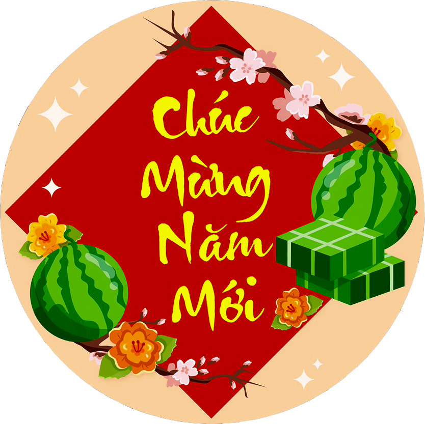

Có lẽ những ngày giáp Tết đối với rất nhiều đứa trẻ xóm chợ là những ngày mà chúng tìm thấy niềm vui và sự thích thú.
Nhưng những ngày Tết lại là điều mà chúng mong đợi hơn bao giờ hết. Ngày Tết quê em thực sự ý nghĩa và là điều đáng nhớ để bắt đầu một năm mới.
Mùa xuân đến, Tết đã gõ của mọi nhà, niềm vui nhân đôi, hạnh phúc bội phần. Trẻ con chờ mong ngày Tết còn nhiều hơn là người lớn.
Người lớn bảo Tết vui vẻ nhưng có nhiều điều phải lo toan hơn, sắm sửa nhiều thứ hơn và tốn nhiều tiền hơn.
Nhưng trẻ con không quan tâm điều đó, vì Tết là dịp để chúng em có thêm nhiều quần áo mới, được nhận lì xì, quà bánh ăn không hết và không phải học bài.
Có lẽ đó là điều đứa trẻ nào cũng thích thú.

Chúc Mừng Năm Mới 2023
Test đoạn chữ thu nhỏ